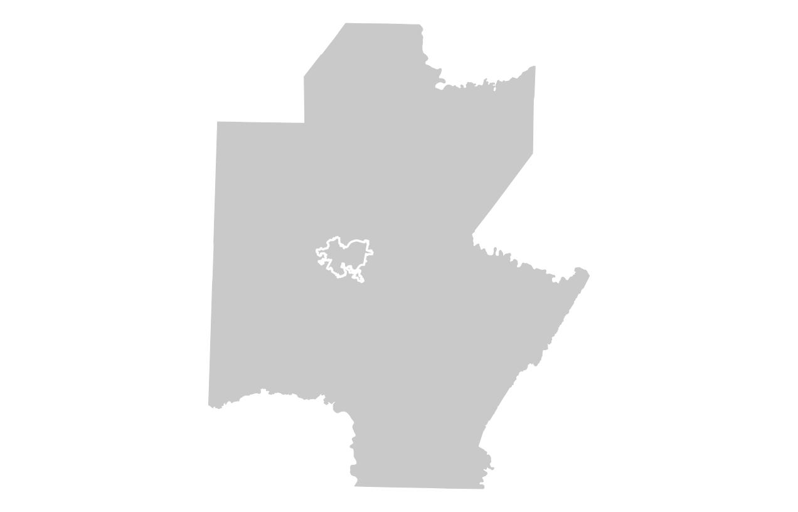

I'm a spatial data science student at the University of Oregon interested in demography, drone mapping, trail systems, and cartographic design. My work is focused on telling compelling stories through the medium of maps.
View ResumeExploring demographic, economic, and spatial patterns across the Pittsburgh MSA using GIS packages and Census data in R.

Tools: R, sf, tigris, spdep, ggplot2, crsuggest, tidyverse, tidycensus, showtext
A cartographic project exploring characteristics of the Iceland Divide bikepacking route.
Results of a GIS suitability analysis examining potential locations for bike share infrastructure in Salem, Oregon.
A spatial analysis examining service areas and geographic accessibility across Salem, Oregon.
A cartographic project examining the geography and characteristics of a watershed in the Zigzag River area.
Email: jmason9@uoregon.edu, joshuatmason@outlook.com
GitHub: github.com/joshuathomasmason